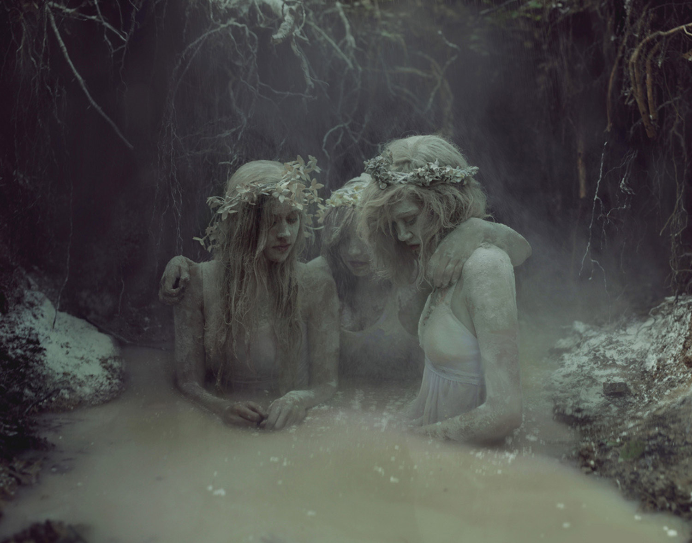
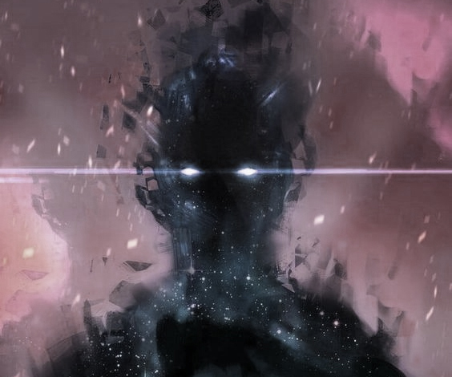

Brides

Once a year, in the day of winter solstice, The Great Master allows his apprentices to bring to the mill their beloved. If the one would solve Master's tasks, she could take her boy home,and he would be free from The Master. But if the Master win,then apprentice should kill his beloved. After the rite apprentices bury bodies in the old lake,near the swamp,where dead girls become the Drowned Brides. Each of Bride has her own unique power,hepling her to catch people in tricky traps.
The Highest Spirit

The beast lay hunched in the brooding forest on the borderline between The Known and The Unknown. He was part of the latter but he was hungry for fresh meat. He was as large as a bear on it's hind legs and with jaws just as powerful, but his skin was a dull green and the claws he held at the ready looked borrowed from some prehistoric predator, they were twelve inches to the tip and sharper than a butcher's knife. He squinted his red eyes toward the dappled shade of the meadow that surrounded the people village and tensed his muscles ready to pounce. That sunlight would be murder on his delicate skin and almost unprotected retinas. Then came a sound to fill his heart with joy, it was a child, skipping and singing. A child who had not listened to it's mother's warnings about staying away from The Unknown.